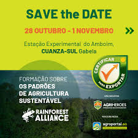
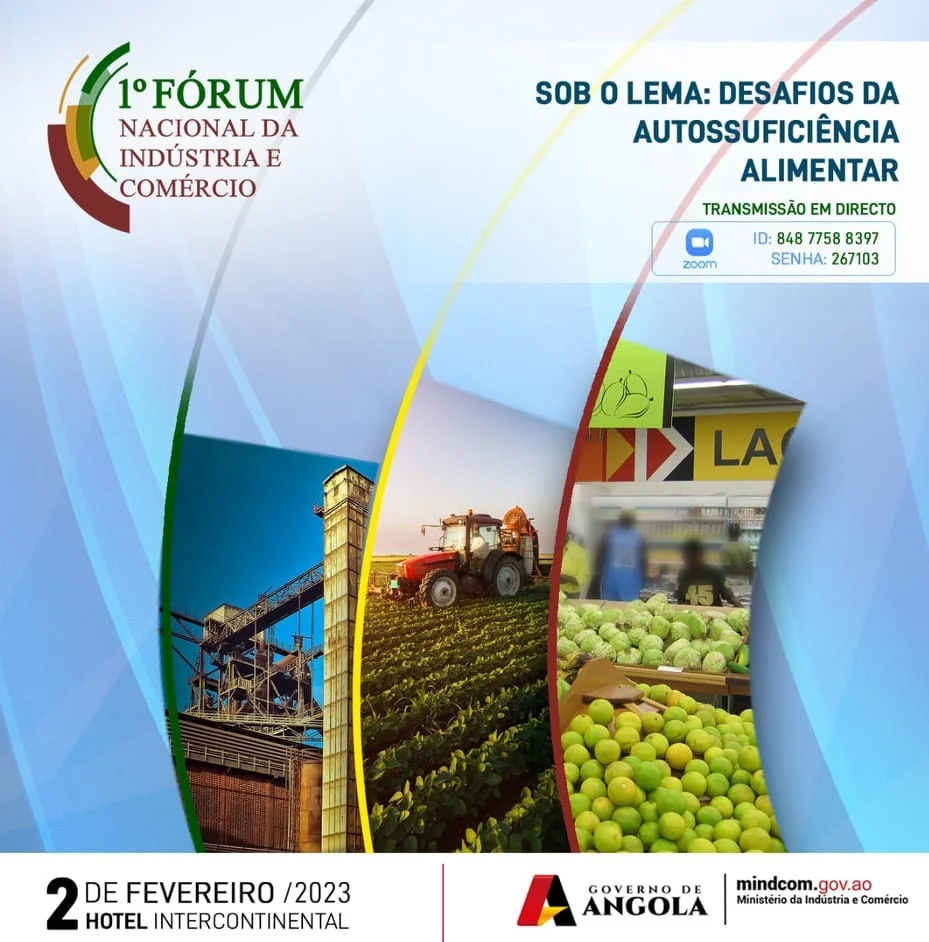
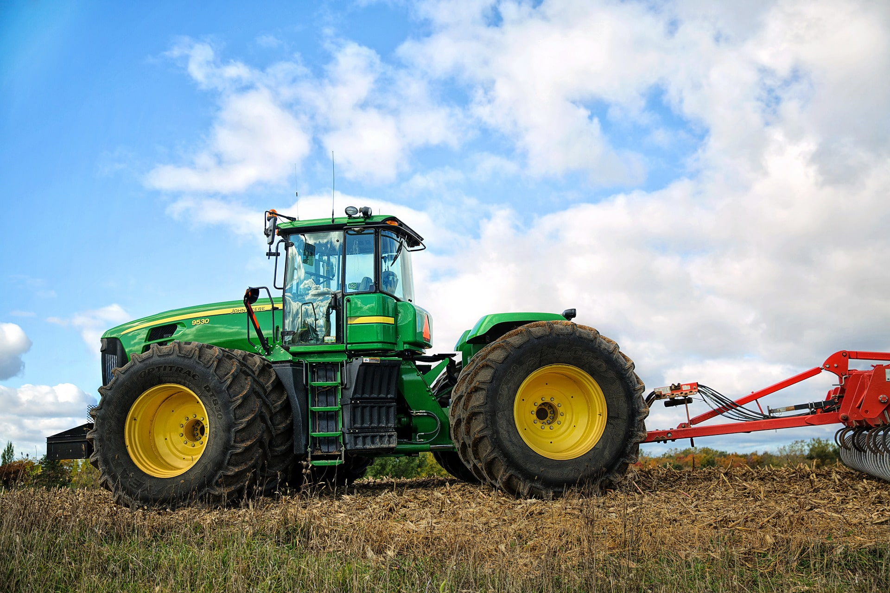

O Instituto de Desenvolvimento Agrário participa e patrocina diversos eventos agropecuários em Angola e no exterior, promovendo o desenvolvimento rural, a inovação agrícola e a troca de conhecimentos entre produtores, técnicos e parceiros.
O IDA participou com um stand interativo, promovendo tecnologias agrícolas para pequenos produtores.
Ver mais
O IDA patrocinou palestras e oficinas sobre práticas agrícolas sustentáveis e uso eficiente da água.
Ver mais
Representantes do IDA apresentaram programas de apoio à agricultura familiar e parcerias estratégicas.
Ver maisAlém das iniciativas diretamente ligadas ao setor agro, o IDA também participa de eventos multidisciplinares que contribuem para o fortalecimento institucional, a inovação tecnológica e o desenvolvimento rural sustentável em Angola.

Discussão sobre soluções tecnológicas para o meio rural, com participação ativa de representantes do IDA.
Ver maisIDA promoveu debates e workshops em comunidades sobre estratégias de inclusão social e produtiva.
Ver maisEspecialistas do IDA debateram políticas e programas para promoção do desenvolvimento rural.
Ver maisPreencha o formulário abaixo para garantir a sua participação nos eventos promovidos ou apoiados pelo Instituto de Desenvolvimento Agrário.